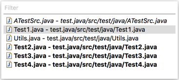
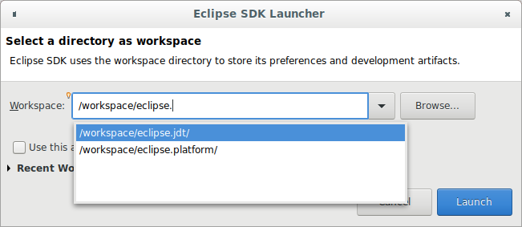
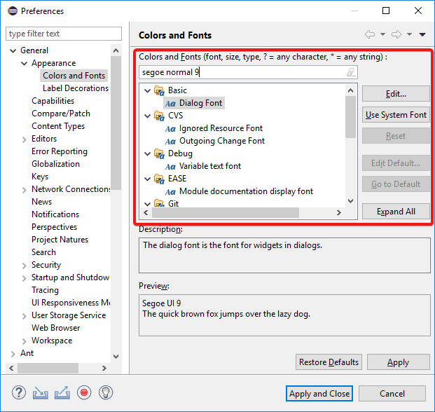
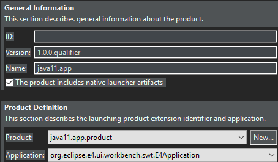
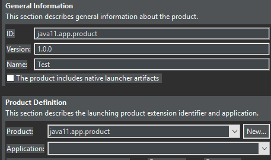
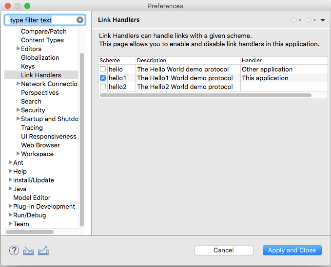

Views, Dialogs and Toolbar


Preferences
The new search capability enables you to quickly see where a font is used or where a specific style or size is used.
Examples of search texts are: "segoe", "consolas 10", "consolas 9 bold", "italic bold", "semibold".

Themes and Styling
This chevron button doesn't have transparency artifacts anymore, making it more readable especially in the dark theme.


Old style:

New style:

General Updates
An URL scheme defines the context and thus defines the type of URL, which determines the interpretation of the following URL part.
Examples of a few popular schemes include https, ssh and git.
You can control the URL schemes that should be handled by the current Eclipse installation via the General > Link Handlers preference page.

Plugins can add handlers for custom URL schemes via the extension point org.eclipse.urischeme.uriSchemeHandlers.
SWT_GTK3
environment variable is ignored, as only GTK3 is supported now.